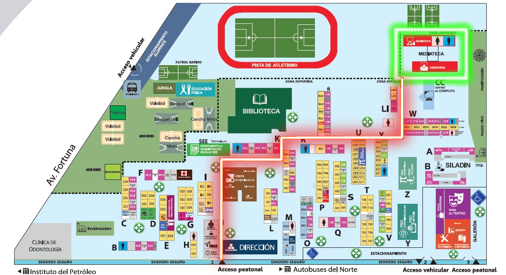
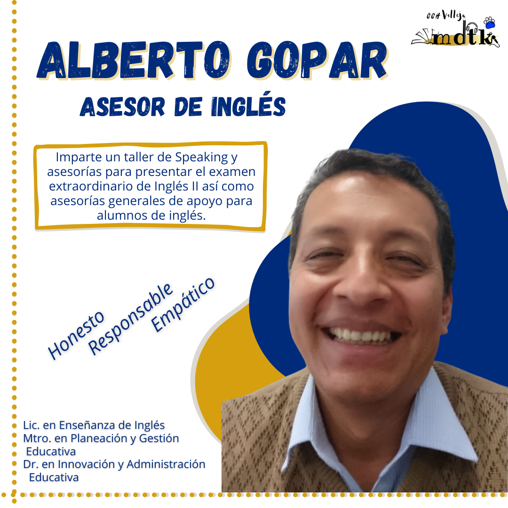

Hola a tod@s, bienvenid@s a esta seccion en el cual veremos, acerca de las asesorias que dan en mediateca, ya que muchos estamos aqui, por tarea, por puntos extra, por que les interesa, por que les caen chido a los asesores,etc.
Pero antes de comenzar veamos que es la mediateca.
¿Qué es la Mediateca?
La Mediateca es un centro de auto acceso que pone a tu disposición diferentes tipos de recursos (físicos y digitales) para aprender y practicar idiomas a tu propio ritmo y de acuerdo con tus necesidades, objetivos e intereses personales.
Estara en servicio de lunes a viernes de 9:00 a 19:00 horas en el edificio MB planta alta por el lado izquierdo
"Como llegar desde puerta 1"
"Como llegar desde puerta 3"

"Recorrido hacia asesorias de mediateca."
¿Como tomar una asesoria?
¿Qué nesesito para tomar una asesoria?
-Credencial escolar.
-Tus materiales esenciales para trabajar, ya que no podras cargar con tu mochila, asi que debes prepararte para saber lo que vas a usar.
-En caso de que tu asesoria sea en los dispositivos elctronicos, deberas llevar audifonos
IMPORTANTE: En todo momento deberas de llevar tu cubrebocas, ya que es obligatorio
¿Como tomar una asesoria de idiomas?
Sin duda una de nuestras grandes cuestiones existenciales, es el saber como se lleva a cabo una asesoria de ingles o frances en mediateca, pero no te preocupes, ya que esto va a ser muy fácil.
1. Cuando entres, deberas dejar tu mochila en los casilleros, que se en cuentran el la derecha de la puerta
2. Despues, tomaras gel antibacterial que esta ubicado frente el area de recepción.
3. Cuando estes sanitizado, haras un registro de tu asesoria:
Primero, la persona asesora te preguntara en que tema tienes duda.
Despues, pasaras solo una vez el codigo de barras por tu credencial, cuando te lo indique la persona asesora.
NOTA: No pierdas tu credencial, ya que con esa vas a entrar y salir.
Finalmente la persona asesora te preguntará, si tu asesoria la vas a tomar en computadora o en libro, para que te asigne un lugar.
Y comenzará tu asesoria
4. Cuando termine la asesoria y quieres que te firmen la actividad, deberas de copiar o imprimir el siguiente formato.
Da click en la siguiente imagen para abrir el diario de aprendizaje.
5. Para salir deberas registrar tu salida con tu credencial.
Y listo ya tomaste tu asesoria, las duraciones de estas asesorias dependen de ti y puede tener una duración variada dependiendo del tema en que tengas duda.
Acerca de los asesores
Las personas asesoras te podrán apoyar cuando tengas duda en lo que estas aprendiendo, su objetivo es que el alumno comprenda el tema y atienda sus respectivas dudas.
Es un equipo alrededor de 20 personas que estarán dispuestos a apoyarte en tu proceso de aprendizaje.
Aqui les presentamos algunas caracteristicas de los profesionales que conforman este gran equipo.
Cordinadora
Tecnicos academicos
Asesores de ingles

Asesores de frances
Teletamdem
En Teletamdem podras aprender y practicar en linea con estudiantes de Estados Unidos y Canadá.
Consiste en entablar una conversacion con otra persona extranjera, en donde tu compañero te ayudara con tu ingles o frances, mientras que podras apoyarlo con su español
sin duda es una experiencia increible el cual no te puedes perder.
Participa en Teletándem uniéndote al equipo de Teams, da clic en la imagen, utiliza tu correo institucional @cch.unam.mx ó @alumno.cch.unam.mx
Mediateca en linea
Proceso para solicitar una asesoria en Mediateca online
Consulta el horario disponible de cada profesor antes de realizar la solicitud, revisa que coincida con tu disponibilidad también.
Tambien nota del nombre del profesor e ingresa a la plataforma PSI para iniciar el proceso de solicitud.